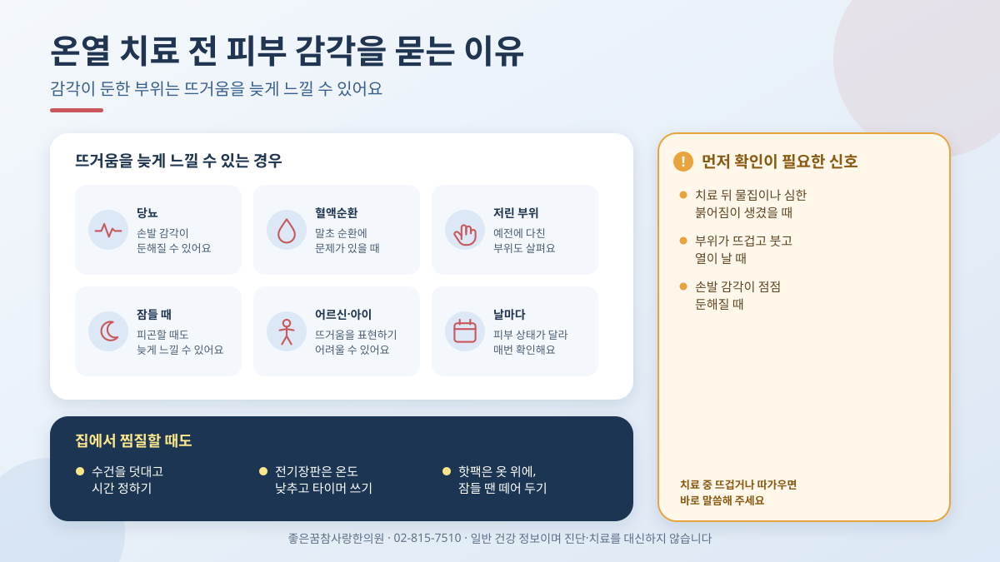

온열 치료는 피부 감각이 둔하거나 혈액순환에 문제가 있으면 뜨거움을 늦게 느낄 수 있어, 치료 전 감각과 건강 상태를 확인하고 온도와 시간을 매번 맞춥니다.
여쭙는 것
- 치료 부위에 저리거나 둔한 느낌이 있나요?
- 당뇨나 혈액순환 문제가 있나요?
- 예전에 찜질로 화상을 입은 적이 있나요?
생활에서 해 볼 것
- 치료 중 뜨겁거나 따가우면 바로 말하기
- 집에서 찜질할 때도 수건을 덧대고 시간 정하기
- 전기장판은 온도를 낮추고 타이머를 써서 몸에 오래 닿지 않게 하기
한의원에서 함께 살필 것
- 오래된 뻐근함으로 온열 치료가 필요한 경우 감각과 상태를 확인한 뒤 진행합니다.
- 감각이 둔한 분은 온도를 낮추고 시간을 짧게 조절합니다.
- 온열이 맞지 않는 경우 다른 방법을 함께 찾습니다.
먼저 확인이 필요한 신호
- 치료 뒤 물집이나 심한 붉어짐이 생긴 경우
- 부위가 뜨겁고 붓고 열이 나는 경우
- 손발 감각이 점점 둔해지는 경우

온열 치료 전에 피부 감각을 묻는 이유는, 감각이 둔한 부위는 뜨거움을 늦게 느껴 모르는 사이 화상을 입을 수 있기 때문입니다. 당뇨나 혈액순환 문제가 있는 분, 어르신, 저림이 있는 부위는 특히 그날의 감각과 피부 상태를 확인하고 온도를 낮추거나 시간을 짧게 맞춥니다.
따뜻한 느낌이 편안하다 보니 조금 뜨거워도 참는 분이 많습니다. 하지만 온열 치료는 뜨겁게 할수록 좋은 것이 아니어서, 기분 좋게 따뜻한 정도를 넘으면 바로 말씀해 주시는 것이 가장 안전한 방법입니다.
왜 이런 위험이 생길 수 있나요
- 당뇨나 말초 혈액순환 문제가 있으면 손발 감각이 둔해질 수 있습니다. 집에서 쓰는 전기장판이나 핫팩도 같은 이유로 온도와 시간을 정해 두는 것이 안전합니다.
- 저림이 있는 부위나 예전에 다친 부위는 뜨거움을 덜 느낄 수 있습니다.
- 잠이 들거나 피곤한 상태에서는 뜨거움을 알아차리기 늦을 수 있습니다.
- 같은 사람도 날마다 피부 상태가 달라 매번 다시 확인합니다.
- 어르신이나 아이는 뜨거움을 표현하기 어려워할 수 있어 더 자주 확인합니다.
- 흉터가 있거나 피부가 얇아진 부위, 파스를 막 뗀 자리는 열에 더 예민하게 반응할 수 있습니다.
- 수면제나 진통제를 드신 날, 술을 마신 다음 날에는 뜨거움을 느끼는 반응이 늦어질 수 있습니다.

먼저 이렇게 여쭙니다
- 치료 부위에 저리거나 둔한 느낌이 있나요?
- 당뇨나 혈액순환 문제가 있나요?
- 예전에 찜질로 화상을 입은 적이 있나요?
- 오늘 피부 상태는 어떠신가요?
- 집에서 전기장판이나 핫팩을 자주 쓰시나요?
스스로 점검해 보세요
- 발끝이나 손끝을 만져도 다른 곳보다 감각이 덜하다
- 핫팩이나 전기장판 자국이 붉게 남았던 적이 있다
- 찜질하다가 잠든 적이 있다
- 당뇨나 혈액순환 문제로 치료받고 있다
- 치료받을 부위에 흉터나 상처, 피부 질환이 있다
- 오늘 수면제나 진통제를 드셨다
하나라도 해당하면 치료 전에 말씀해 주세요. 온도를 낮추고 시간을 짧게 시작하며, 치료 중에도 더 자주 여쭙습니다.

일상에서 먼저 해 볼 수 있는 것
- 치료 중 뜨겁거나 따가우면 바로 말하기
- 집에서 찜질할 때도 수건을 덧대고 시간 정하기
- 전기장판은 온도를 낮추고 타이머를 써서 몸에 오래 닿지 않게 하기
- 치료 뒤 피부 붉어짐 살펴보기
- 핫팩은 옷 위에 붙이고 잠들 때는 떼어 두기
집에서 찜질할 때는 15~20분 정도로 시간을 정하고, 중간에 한 번 피부를 들여다보세요. 따뜻하게 한 뒤 몸이 시원하게 풀리면 그 방법을 이어 가도 좋지만, 쥐가 나거나 욱신거림이 늘면 멈추고 다음 진료 때 그 느낌을 알려 주세요. 막 삐끗해 붓고 열감이 있는 부위는 뜨거운 찜질을 피하는 편이 좋습니다.
예를 들면 이런 경우입니다
- 예를 들어 당뇨가 있어 발끝 감각이 무딘 어르신이 겨울마다 전기장판을 켜고 주무시는 경우라면, 잠들기 전에 이불을 데워 두었다가 끄거나 타이머를 맞추고, 아침에 발과 엉덩이 쪽 피부를 한 번씩 살펴보세요.
- 예를 들어 야근이 잦은 직장인이 피곤한 상태로 와서 치료 중 깜빡 잠들 것 같다면, 시작 전에 미리 말씀해 주세요. 온도를 조금 낮추고 중간에 한 번 더 여쭈어 확인합니다.
- 예를 들어 독서실에서 허리에 핫팩을 붙이고 오래 앉아 있는 수험생이라면, 맨살이 아닌 옷 위에 붙이고 한 시간에 한 번은 일어나 자리를 옮겨 붙이는 편이 안전합니다.

얼마나 지켜보고, 언제 바로 확인할까요
- 치료 뒤 피부가 살짝 붉어졌다가 몇 시간 안에 가라앉는다면 지켜보셔도 괜찮습니다. 다음 진료 때 알려 주세요.
- 붉은 기나 화끈거림이 하루가 지나도 남아 있다면 사진을 찍어 두고 전화로 알려 주세요.
- 이럴 땐 바로 확인하세요. 물집이 생겼다면 터뜨리지 말고 흐르는 시원한 물로 충분히 식힌 뒤 가까운 의료기관에서 확인받으세요. 피부가 하얗게 또는 거뭇하게 변했거나 만져도 감각이 없다면 겉보기보다 깊은 화상일 수 있어 지체하지 말고 진료를 받으세요.
- 몇 주에 걸쳐 손발 감각이 점점 둔해진다면 온열 치료와 별개로 원인을 확인할 수 있는 의료기관 진료가 먼저입니다.
한의원에서 함께 살필 수 있는 경우
- 오래된 뻐근함으로 온열 치료가 필요한 경우 감각과 상태를 확인한 뒤 진행합니다.
- 감각이 둔한 분은 온도를 낮추고 시간을 짧게 조절합니다.
- 온열이 맞지 않는 경우 다른 방법을 함께 찾습니다.
좋은꿈참사랑한의원에서는 온열 장비를 쓰기 전 감각과 피부 상태를 먼저 확인하고, 필요하다고 판단될 때 IS400 극초단파 치료기 같은 온열 장비를 침·추나 등과 이어서 씁니다. 치료 중에도 뜨거운 정도를 여러 번 여쭙고, 감각이 둔한 분은 온도를 낮추고 시간을 짧게 조절합니다.
처음 오시면 아픈 부위와 경위를 듣고 맥을 짚은 뒤, 치료할 부위의 피부를 직접 보고 만져 보며 감각이 다른 곳과 같은지 확인합니다. 그다음 오늘 온열 장비를 쓸지, 쓴다면 어느 부위에 어느 정도로 할지 설명해 드리고, 치료가 끝나면 피부 상태를 함께 살핀 뒤 집에서 찜질할 때 지킬 시간과 방법을 알려 드립니다.

이렇게 기록해 오시면 상담이 쉬워집니다
- 당뇨나 혈액순환 질환 여부
- 저리거나 감각이 둔한 부위
- 예전 화상 경험
- 집에서 쓰는 찜질 방법과 시간
- 그날 드신 약(수면제, 진통제 등)
집에서 쓰는 찜질 도구는 종류보다 쓰는 방법이 더 중요합니다. 전기장판을 몇 단계로 몇 시간 켜 두는지, 핫팩을 맨살에 붙이는지 옷 위에 붙이는지처럼 적어 오시면 생활 속 화상 위험을 줄일 방법을 함께 찾기 쉽습니다.
이런 증상은 먼저 확인이 필요합니다
- 치료 뒤 물집이나 심한 붉어짐이 생긴 경우
- 부위가 뜨겁고 붓고 열이 나는 경우
- 손발 감각이 점점 둔해지는 경우
온열·물리요법 장비는 진찰 후 필요하다고 판단될 때만 사용합니다. 피부 감각이 둔하거나 몸에 금속·전자 의료기기가 있다면 꼭 먼저 알려 주세요.

함께 읽으면 좋은 글
- 온열 치료를 받기 전에 먼저 알려야 하는 분은 어떤 경우인가요?
- 온열 치료를 받을 때 온도는 어떻게 확인하나요?
- 극초단파 치료기는 어떤 장비인가요?
한눈에 보는 표
| 구분 | 핵심 |
|---|---|
| 여쭙는 것 | 치료 부위에 저리거나 둔한 느낌이 있나요? 당뇨나 혈액순환 문제가 있나요? |
| 생활에서 해 볼 것 | 치료 중 뜨겁거나 따가우면 바로 말하기 집에서 찜질할 때도 수건을 덧대고 시간 정하기 |
| 한의원에서 함께 살필 것 | 오래된 뻐근함으로 온열 치료가 필요한 경우 감각과 상태를 확인한 뒤 진행합니다. 감각이 둔한 분은 온도를 낮추고 시간을 짧게 조절합니다. |
| 먼저 확인이 필요한 신호 | 치료 뒤 물집이나 심한 붉어짐이 생긴 경우 부위가 뜨겁고 붓고 열이 나는 경우 |
자주 묻는 질문
어르신도 온열 치료를 받을 수 있나요?
받을 수 있지만 감각과 피부 상태를 더 세심하게 확인하고 진행합니다.
집에서 찜질을 해도 되나요?
가능하지만 너무 뜨겁거나 오래 하지 않도록 시간을 정해 두는 것을 권합니다.
저온 화상은 무엇인가요?
아주 뜨겁지 않은 온도라도 오래 닿아 있으면 생길 수 있는 화상입니다. 전기장판이나 핫팩을 오래 쓸 때 특히 조심하세요.
집에서 찜질팩은 몇 분 정도가 적당한가요?
사람과 부위에 따라 다르지만, 시간을 정해 두고 중간에 피부를 확인하는 것이 좋습니다. 감각이 둔하다면 더 짧게 하세요.
치료 중에 조금 뜨거운데 참아도 되나요?
참지 마시고 바로 말씀해 주세요. 온도와 시간을 그 자리에서 다시 맞춥니다.
이 글은 일반적인 건강 정보이며 개인의 진단이나 치료를 대신하지 않습니다. 증상이 있거나 복용 중인 약이 있다면 진료를 통해 확인하세요. 치료 효과는 개인마다 다를 수 있습니다.
작성 기준: 일반적으로 알려져 있는 건강 정보를 참고해 정리했습니다(대표원장 감수). 증상 기록은 1~2주 동안 하루 1회, 비슷한 시간에 적어 오시면 지난 상태와 비교하기 쉽습니다.
좋은꿈참사랑한의원은 재진 때 지난번 이야기부터 이어서 여쭙니다. 진료시간과 예약은 오시는 길에서 확인하세요.